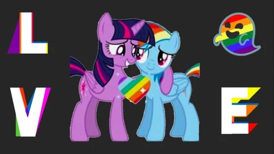

酷儿论坛 2019 秋季志愿者纳新全面启动

杭州酷儿论坛致力于为杭州及周边地区学生性少数人群提供一个多元、健康、平等的环境，促进自我认同和社会认可。
酷儿论坛的工作组都由志愿者构成，工作组下设 2 个支持性部门——行政组、媒体组，5个长期项目组——翻译组、三会组、检测组、心理组、桌游组，此外，全体酷儿论坛志愿者都是短期项目组，即活动部的成员。

工 作 职 能
行政组的日常就是为各部门的工作提供支持，例如协调会议时间，掌管论坛财政大权，制定酷儿论坛各项规章制度，对各项目进行监测评估，撰写年度发展报告，进行志愿者管理及考核。
2 /
特 别 需 要
3 /
必 须 加 入
行政组虽然自身没有什么很大的活动产出，但我们是酷儿论坛最坚实的后盾，与论坛同进退。行政组是和各组打交道最多的部门，很锻炼你为人处事的能力，让你有最充足的机会多多了解团队中的每个人，发现大家的可爱之处。

三 会 组
工 作 职 能
观影会是论坛的老牌活动，集体看♂片的体验值得泳有，下一阶段的活动中，我们将给大家带来更多行性少数、女性主义的相关好片！
2 /
未 来 规 划
未来，我们还策划了许多创新的活动方式！如手工工作坊、辩论会等，欢迎同样有着新点子的你加入我们！

工 作 职 能
2 /
希 望 你 能

工 作 职 能
2 /
希 望 你 能
3 /
必 须 加 入
我们和许多社会力量一道，致力于联合国2030年终结艾滋(#EndAIDS)的目标。

工 作 职 能
每周六18:30准时（不是）开始的桌游活动是论坛的传统活动，据不完全统计至今已举行了150多次（鼓掌），在这里你可以认识到很多的朋友，可以连着音响放恐怖音乐玩游戏，可以和知心朋友吐吐苦水，还可以听老前辈们讲杭州酷儿的心酸历史，甚至可以玩完桌游约两三好友喝酒吃串。
2 /
希 望 你 能
爱好桌游，有能力组织桌游和活跃气氛

1 /
工 作 职 能
参与杭州高校友善心理咨询师地图的建设（上半年已经初步建立项目组，确定项目方向和基本操作方法）
2 /
希 望 你 能
对心理咨询有兴趣，或已具备一定的心理学知识

1 /
工 作 职 能
翻译部门成立于2018年上半年，包括但不限于翻译整理性别、性少数议题的论文、新闻、图书。
在2019年上半年度我们发布了“女权主义视角下的跨性别议题”、“既往不咎？“向同性恋道歉”中的同性恋民族主义、霸权主义与历史”两篇超长学术文章的系列译文，前后翻译字数高达五六七八万字！
我们一年多的历史可以概括如下：
泥潭学术门面，河蟹丰收产区。
忙时爆肝脱发，闲时砍柴喂马。
[图片来源：网络]
[图片来源：https://www.huffingtonpost.ca]
同声传译 | 既往不咎？“向同性恋道歉”中的历史（上）——被抹除的历史
发 展 计 划
如 果 你 能
你有敏感的文化嗅觉，能够搜寻国内外最新的性/别研究、社评；
你有不错的学术素养，愿意针对某一问题展开深入探讨；
无论你是杭州土著还是异国学子，只要对翻译部充满热情，愿意加入到下半年度的协同翻译计划中，你都是我们最需要的人。

活 动 组
1 /
工 作 职 能
倡导活动是酷儿论坛的核心项目，志愿者们通过举办讲座、涂鸦等各类活动向公众发声；从教科书项目、教师游说项目入手推进友好校园环境建设，倡导多元性别和平等理念，营造更为平等、多元、开放、包容的校园文化乃至社会环境。培育有志青年参与同志公益活动。
此外，开学趴、新年趴等临时的大型活动也都由活动部来筹备。
所有活动都对每名志愿者开放，你可以根据自己的兴趣选择各种活动来参加或者加入它的策划小组，也可以自由地发起新活动哦~
点击图片可查看2019新年趴回顾

点击图片可放大一下
2 /
希 望 你 能
（也就是对所有想要加入酷儿论坛的小伙伴的期待）
对性少数群体友好，有一颗多元和包容的心（当然我们也欢迎友同直人~）；
有基本的性/别意识，或者愿意接触学习多元性别理论；
对同志公益有热心，有平等权益的意识，认同我们的愿景；
有较强的责任心和行动力，并且愿意花一定时间的；
最好有一定的活动策划能力；
不怕出柜的（如果你想要参加线下倡导活动的话~）；
主要居住在杭州；
并且真的想为杭州高校同志群体做一些事情。
3 /
你 将 收 获

报 名 方 式